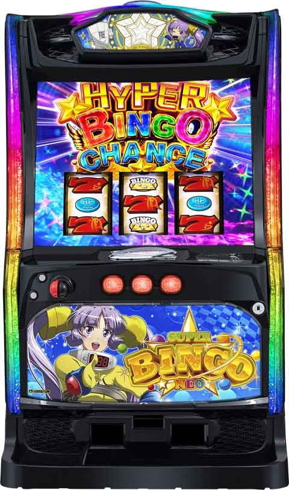

【スロ塾式リセ狙い】Lスーパービンゴネオ～期待値表も添えて～

少しだけ考察の流れを説明します
■ サンプルとデータ
・現在実践サンプルは93台、サンプル数としては非常に少ないです。
－ それでも公開する理由、現在のビンゴの存続を考量し公開を前倒ししました。
・今回の解析では、実践サンプルと大量の実践値データを組み合わせ、現段階での見込み期待値を算出します。
■ 解析のポイント
リセ狙いの示唆比率
ーリセ狙い続行できる示唆と続行できない示唆の比率をサンプリング。
リセ狙い続行時の平均TY
ーリセ狙いを続行した場合の平均TY（連荘枚数）を大量実践データと実践データから算出します。
リセ狙いゾーンの当選比率と平均TY
ーリセ狙いゾーンで実際に当選する確率と、その際の平均TYを算出します。
市場実践データから想定される平均TYと実践平均TYを比較します。
■ 期待値算出の流れ
まず、リセ狙い示唆の出現比率を基に、大量実践値データ平均からリセ狙い続行時の平均TYを逆算します。
実践値データの平均TYは、けんけんさんやツラヌキメソッドさんが公開しているデータを利用します。


実践値データ平均TYから予想されるパターン比率平均TYを算出し、実践サンプルの平均TYと比較します。 予想値と実践サンプルの値が近いほど、信頼性の高いデータとなります。これらが今回の解析で最大の難関ですが、これさえクリアすれば後の計算は容易になります。
■ 結論
実践サンプル数が少なくても、上記の手法を用いることで、安定した「０からリセ狙い」期待値が算出可能になります。
有料部分では、リセ狙いの具体的な手順と算出された期待値データを公開します。立ち回りの参考になれば幸いです。
期待値は等価店舗と5.5枚数交換店舗に対応しています。
スーパービンゴのエフェクトの仕組み(予想)
天井以外の初当たりでエフェクト(穢れ)発動が濃厚！
見た目ではわからない。
天井で当たった場合単発なら穢れが内部的に引き継がれる挙動を確認しています。
エフェクトの示唆が発動するタイミングは３つ
1つ目
111、333、555、777のゾーンのロングリーチの終わりのタイミング。ゲーム数でいうと＋22gか+33gくらいでロングリーチ終わるので横の台もエフェクトチェック
2つ目
theセグ(cz)失敗時
３つ目
ＢＣ終わり通常に戻るタイミング
特に天井単発後は前回のエフェクトを引き継ぎして演出が発生しやすい
単発以外でも稀にエフェクト示唆が発生する

スロ塾式リセ狙い方手順
0〜111のゾーン終わりまで
エフェクト示唆が の場合→即ヤメ
の場合→即ヤメ
エフェクト示唆が 以上→当たるまで続行
以上→当たるまで続行
当たった後
天井以外→
通常戻り時にエフェクトが発生しなければ即ヤメ。ただし、差枚狙い1500枚以上の場合は111のゾーンまで続行
天井の場合→
・単発以外（継続率による連チャン）の場合は、エフェクトが発生しなければ即ヤメ
・ 単発の場合は
単発の場合は
→エフェクト緑以上発生111ゾーンまで
→エフェクトが発生しない。この場合111ゾーンでもエフェクトが発生しない場合がある。一旦やめても大丈夫です。期待値表は一旦やめまでを想定。
内部エフェクトが 以上ならエフェクトＢＣ発動まで続行
以上ならエフェクトＢＣ発動まで続行
期待値一覧
まずは一切調整がはいってないサンプルデータがこちら、緑で続行がおよそ28%ほどでした。

続いて、けんけんさんとツラヌキメソッドさんのから想定される全条件の平均TYから
青の平均TYを300、400、500、600と想定したときの緑の平均TYを算出

さらに天国抜けて、青やめと緑続行の比率を想定し、期待値を算出
等価期待値

非等価(5.5枚交換持ちメダル０想定)期待値

こちらの期待値の各パラメータ次第で期待値が変わってきますが、等価で最悪なケースは青の平均TYが600枚かつ緑の出現が20%で、逆に一番期待値が高いパターンが青の平均TYが300枚で、緑の出現が30%です。もし後者のパターンならキン肉マン並みにもしくはそれ以上に優秀なリセ台ということに
なります。
現在の条件を元に想定期待値と予想機械割
そして現在は緑28%、青の平均ＴＹが400想定
・1台あたり想定期待値が￥2,353
・1台あたり予想機械割が110%
これからも打てる限り更新していきます。みなさんビンゴリセ狙いライフをお楽しみください。
ビンゴ Q&A
Q1. 111前兆後、青い吸い込みが入り上パネルが緑になった場合、続行すべきか？
A. 吸い込みは青しか発生せず、その時に溜まるptで大きさが変わる。続行の目安は緑のエフェクト発生時。筐体の真ん中上の が緑になるので、それを確認。
が緑になるので、それを確認。
Q2. 0から111ゾーンまで打った場合の期待値は？
A. noteの期待値表で確認。
Q3. フリーズして切断された場合、穢れはリセットされるのか？
A. エフェクトはリセットされるが、上位後は111のゾーンで当たるため即やめ厳禁。
Q4. スロ塾に入るとチバリヨやビンゴのリセット内容はnoteを購入しなくても分かるか？
A. メンバーはnoteの内容を閲覧可能。
Q5. 体感でリセット時に緑以上が出る確率はどれくらいか？
A. 実践サンプル上20-30%程度。
Q6. 天井単発時、エフェクトはどうなるか？
A. 実践値では、 以上のエフェクトは引き継ぎされるが、
以上のエフェクトは引き継ぎされるが、 は単発後に青になることもある。緑で単発エフェクトなしならやめても問題なし。
は単発後に青になることもある。緑で単発エフェクトなしならやめても問題なし。
Q7. エフェクトは一度昇格すると当たるまで降格しないか？
A. 基本的に降格しないが、内部仕様は100%断言できない。
Q8. リセット以外のの狙い方は？
A. 通常のハマり狙いなら320Gは欲しい。
Q9. エフェクトBCとは？
A. エフェクト解放するBCのこと。画面では確認できず、天井単発以外ではやめ。
Q10. リセット以外で緑エフェクトを確認した場合の対応は？
A. リセット以外の緑は320G程度から天井狙い。
Q11. リセの当選後、単発だった場合の対応は？
A. 現段階ではエフェクト出現しなくても111ゾーンまで続行し、エフェクトを確認。ただし、緑は単発時エフェクトが出現しない場合がある。この場合は一旦やめても問題ない。
Q12. AIを使って計算式を元に個人で計算するのは問題ないか？
A. 計算は問題なし。ただし、AIはロジックをしっかり教え込まないと誤った結果を出すことがあるため注意。
Q13. 緑続行時のTYと期待値の計算結果は？
A.
- 緑続行TY: 1571枚
- 青続行TY: 400枚
- 天国当選TY: 600枚
- 天国抜け時の比率: 青72%、緑28%
- 天国抜けやめ時の消費メダル: 223枚
- 天国抜け後緑続行時の消費メダル: 653枚
- 期待値: 2331円